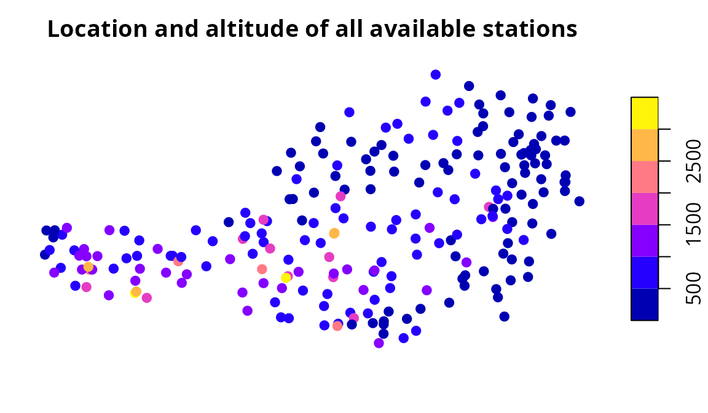
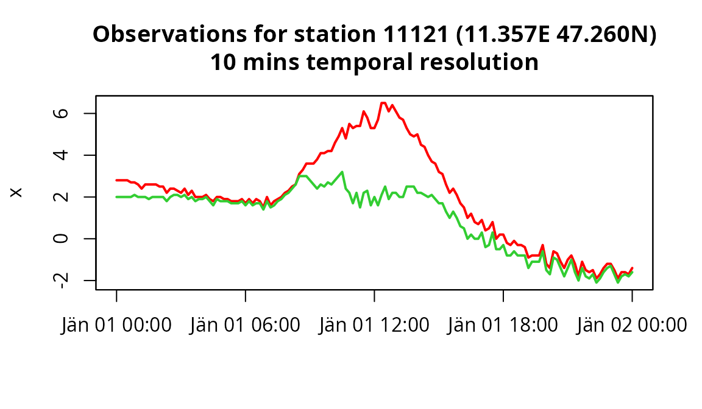
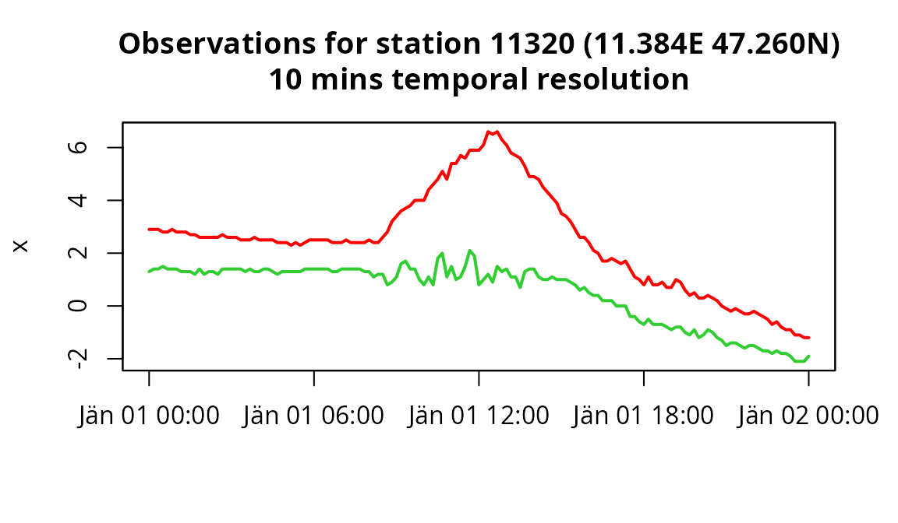

gsdata: Interface to the GeoSphere Austria DataHub API (Data Access)
Reto Stauffer
overview.RmdOverview
The handling and use of public sector data and information is standardised across Europe (public sector information; PSI). The aim is to make public sector data more easily accessible to achieve greater economic and social benefits.
Since 2021 GeoSphere Austria, Austria’s federal agency for geology, geophysics, climatology and meteorology, started granting access via their data hub API. In early 2024 the API does not only allow to access station data (high quality in-situ measurements from weather stations) but also spatial data including high-resolution near-real time analysis, spatial climatologies, but also high-resolution weather forecasts.
The gsdata package (GeoSphere data) provides an easy to
use interface to request and process these data sets. In version
0.0.8 only station data can be processed, but functionality
for gridded data (spatial data) will be added soon.
More detailed overviews and examples are provided in the online documentation of the gsdata package:
Installation
The stable release of gsdata is hosted on the
Comprehensive R Archive Network (CRAN) at https://CRAN.R-project.org/packge=gsdata and can be
installed via
install.packages("gsdata")Note that it depends on sf, thus
additional installation of GDAL, GEOS, PROJ and sqlite3 might be needed
(see sf
system requirements). The development version of gsdata
is hosted on github
from where the current development version can be installed using
library("remotes")
install_github("retostauffer/gsdata")Available data sets
The function gs_datasets() retrieves information about
all available data sets. By default type = "station",
mode = NULL is used, thus only returning information about
station data datasets. This can be changed if needed (see
?gs_dataset, or in the online
documentation).
library("gsdata")
ds <- gs_datasets()
head(ds, n = 3)## type mode resource_id data_format response_formats
## 1 station historical histalp-v1-1y station geojson|csv
## 2 station historical klima-v1-1d station geojson|csv
## 3 station historical klima-v1-1h station geojson|csv
## url
## 1 https://dataset.api.hub.geosphere.at/v1/station/historical/histalp-v1-1y
## 2 https://dataset.api.hub.geosphere.at/v1/station/historical/klima-v1-1d
## 3 https://dataset.api.hub.geosphere.at/v1/station/historical/klima-v1-1h
ds <- gs_datasets(type = "grid", mode = "historical")
head(ds, n = 3)## type mode resource_id data_format response_formats
## 1 grid historical apolis_short-v1-1d-100m grid geojson|netcdf
## 2 grid historical inca-v1-1h-1km grid geojson|netcdf
## 3 grid historical snowgrid_cl-v2-1d-1km grid geojson|netcdf
## url
## 1 https://dataset.api.hub.geosphere.at/v1/grid/historical/apolis_short-v1-1d-100m
## 2 https://dataset.api.hub.geosphere.at/v1/grid/historical/inca-v1-1h-1km
## 3 https://dataset.api.hub.geosphere.at/v1/grid/historical/snowgrid_cl-v2-1d-1kmMetadata
Function gs_metadata() allows to retrieve meta
information about a specific data set.
meta <- gs_metadata(type = "station", mode = "historical",
resource_id = "tawes-v1-10min", expert = TRUE)
names(meta)## [1] "title" "parameters" "frequency" "type"
## [5] "mode" "response_formats" "start_time" "end_time"
## [9] "stations" "id_type"The return differs for different types of data. If
type = "station" the return of gs_metadata()
contains e.g., information about the time period data is available
($start_time, $end_time) but also a data.frame
with all available parameters ($parameters; not all
parameters are available for all stations).
# parameters: data.frame with name, description and unit (DE)
head(meta$parameters, n = 2)## name long_name
## 1 DD Windrichtung
## 2 DDX Windrichtung der Windspitze
## desc unit
## 1 Windrichtung der letzten 10 Minuten °
## 2 Windrichtung der Windspitze der letzetn 10 Minuten °In addition a list of available stations is returned
($stations) which contains the station identifier
(id) required to request data via the API.
## Simple feature collection with 2 features and 11 fields
## Geometry type: POINT
## Dimension: XY
## Bounding box: xmin: 11.35667 ymin: 47.26 xmax: 11.38417 ymax: 47.26
## Geodetic CRS: WGS 84
## type id group_id name state altitude
## 79 INDIVIDUAL 11121 NA INNSBRUCK-FLUGHAFEN (AUTOMAT) Tirol 578
## 80 INDIVIDUAL 11320 NA INNSBRUCK/UNIVERSITAET Tirol 578
## valid_from valid_to has_sunshine has_global_radiation is_active
## 79 2002-07-01 2025-01-26 08:00:00 FALSE FALSE TRUE
## 80 2009-07-01 2025-01-26 08:00:00 FALSE FALSE TRUE
## geometry
## 79 POINT (11.35667 47.26)
## 80 POINT (11.38417 47.26)
plot(meta$stations["altitude"], pch = 19,
main = "\nLocation and altitude of all available stations")
This grants easy access to the data sets meta information, check for
available stations and parameters as well as the id of the
station which is required for accessing observational data (next
chapter). Note that the station id may vary between
different data sets!
Station data
Function gs_stationdata() allows to retrieve data of
type "station" (measurements at station level). The
following example retrieves temperature ("TL") and dew
point temperature ("TP") observations for January 1, 2024
of two automated weather stations (tawes); namely station Innsbruck
airport (11121) and Innsbruck University
(11320).
tawes <- gs_stationdata(mode = "historical",
resource_id = "tawes-v1-10min",
start = "2024-01-01",
end = "2024-01-02",
parameters = c("TL", "TP"),
station_ids = c(11121, 11320),
expert = TRUE)
names(tawes)## [1] "11121" "11320"gs_stationdata() either returns a single
zoo time series object (precisely an object of class
c("gs_stationdata", "zoo")) if data for one single station
is requested, or a list of objects for each of the stations as in the
example above.

